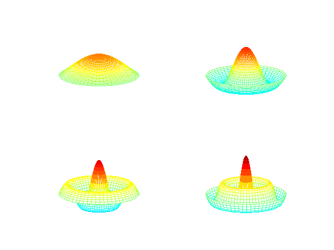
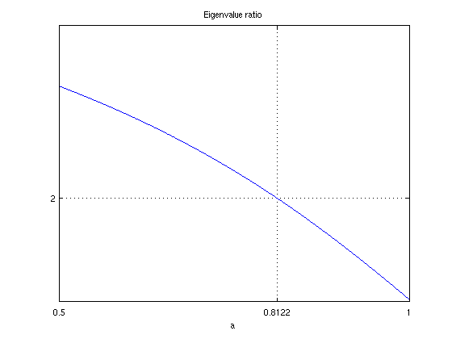
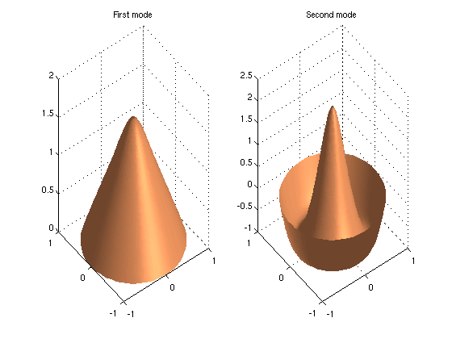

Frequencies of a drum
Toby Driscoll, November 2010
(Chebfun example ode-eig/Drum.m)
function Drum
The axisymmetric harmonic vibrations of a circular drum can be described by the ODE
u"(r) + (1/r) u'(r) = -omega^2 u(r), u'(0)=1, u(1)=0,
where r is the radial coordinate and omega is the frequency of vibration. Only discrete positive values of omega are possible, corresponding to the eigenvalues of the differential equation.
We multiply the ODE through by r to avoid a potential division by zero. This creates a generalized problem in the form A*u = lambda*B*u.
r = chebfun('r',[0,1]); A = chebop(0,1); A.op = @(r,u) r.*diff(u,2) + diff(u); A.lbc = 'neumann'; A.rbc = 'dirichlet'; B = chebop(0,1); B.op = @(r,u) r.*u;
Then we find the eigenvalues with eigs. It turns out that the omega values are also zeros of the Bessel function J0, which gives a way to valudate the results.
[V,D] = eigs(A,B);
omega = sqrt(-diag(D))
err = omega - roots( besselj(0,chebfun('r',[0 20])) )
omega =
2.4048
5.5201
8.6537
11.7915
14.9309
18.0711
err =
1.0e-09 *
0.2790
0.2285
0.0350
0.0029
0.0001
-0.0002
We also get the eigenfunctions, which gives a way to visualize deflections of the drums for pure frequencies.
V = V*diag(sign(V(0,:))); % ensure V(0,k) > 0 [rr,tt] = meshgrid(linspace(0,1,40),linspace(0,2*pi,60)); for k = 1:4, subplot(2,2,k), mesh(rr.*cos(tt),rr.*sin(tt),repmat(V(rr(1,:),k),60,1)) zlim([-1 3]),caxis([-3 3]), view(-33,20), axis off end
If the drum instead has a variable density given by rho(r), the right-hand side of the original ODE becomes -omega^2*rho*u. In general, the connection to Bessel functions is broken, but we will not miss a beat using eigs.
Constant density gives omega_2/omega_1 = 2.2954. Let's design a density so that omega_2/omega_1 = 2, a perfect octave. We will search among density functions of the form
rho(r) = 1 - a*sin(pi*r)
Here is a function that returns the ratio for any a.
function ratio = evratio(a) rho = 1 - a*sin(pi*r); B.op = @(r,u) r.*rho.*u; [V,D] = eigs(A,B,2,0); omega = sqrt(-diag(D)); ratio = omega(2)/omega(1); end
Now, we create a chebfun to hit the target.
ratfun = chebfun(@evratio,[0.5,1],'vectorize','eps',1e-11); astar = find(ratfun==2) clf, plot(ratfun), title('Eigenvalue ratio'), xlabel('a') set(gca,'xtick',[0.5,astar,1],'ytick',[2],'xgrid','on','ygrid','on')
astar =
0.8122
 We compute the ratio at astar to verify the answer, and plot the eigenfunctions.
residual = evratio(astar) - 2 subplot(1,2,1), surfl(rr.*cos(tt),rr.*sin(tt),repmat(V(rr(1,:),1),60,1)) shading interp, lighting phong, title('First mode') subplot(1,2,2), surfl(rr.*cos(tt),rr.*sin(tt),repmat(-V(rr(1,:),2),60,1)) shading interp, lighting phong, title('Second mode') colormap copper
residual = -3.6375e-12
end